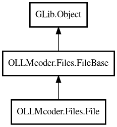

File
Object Hierarchy:

Description:
public class File :
FileBase
Represents a file in the project.
Files can be in multiple projects (due to softlinks/symlinks). All alias references are tracked in ProjectManager's alias_map.
Content:
Properties:
- public int cursor_line { get; set; }
Last cursor line number (stored in database, default: 0).
- public int cursor_offset { get; set; }
Last cursor character offset (stored in database, default: 0).
- public string display_basename { owned get; }
Display name with basename only: basename on first line. Format: {
basename}\n
- public override string display_with_indicators { get; }
Display text with status indicators (approved, unsaved).
- public string display_with_path { owned get; }
Display name with path: basename on first line, dirname on second line
in grey. Format: {basename}\n<span grey small dirname>
- public override string icon_name { get; set; }
Icon name for binding in lists. Returns icon_name if set, otherwise
derives from file content type.
- public bool is_open { get; }
Whether file is currently open in editor. Computed property: Returns
true if file was viewed within last week.
- public bool is_unsaved { get; set; }
Whether the file has unsaved changes.
- public string last_approved_copy_path { get; set; }
Filename of last approved copy (default: empty string).
- public bool needs_approval { get; set; }
Whether the file needs approval (inverted from is_approved). true =
needs approval, false = approved.
- public int scroll_position { get; set; }
Last scroll position (stored in database, optional, default: 0).
- public Buffer? text_buffer { get; set; }
Text buffer for this file (GTK-specific, nullable, created when file
is first opened).
Creation methods:
Methods:
- public string get_contents (int max_lines = 0)
Gets file contents, optionally limited to first N lines.
- public int get_cursor_position ()
Gets the current cursor position (line number). Updates cursor_line
and cursor_offset properties and saves to database.
- public string get_line_content (int line)
Gets the content of a specific line.
- public int get_line_count ()
Gets the total number of lines in the file.
- public string get_selected_code ()
Gets the currently selected text (only valid for active file). Updates
cursor position and saves to database.
- public async string read_async () throws Error
Read file contents asynchronously.
- public void write (string contents) throws Error
Write file contents.
Signals:
Inherited Members:
All known members inherited from class OLLMcoder.Files.FileBase
All known members inherited from class GLib.Object
- @get
- @new
- @ref
- @set
- add_toggle_ref
- add_weak_pointer
- bind_property
- connect
- constructed
- disconnect
- dispose
- dup_data
- dup_qdata
- force_floating
- freeze_notify
- get_class
- get_data
- get_property
- get_qdata
- get_type
- getv
- interface_find_property
- interface_install_property
- interface_list_properties
- is_floating
- new_valist
- new_with_properties
- newv
- notify
- notify_property
- ref_count
- ref_sink
- remove_toggle_ref
- remove_weak_pointer
- replace_data
- replace_qdata
- set_data
- set_data_full
- set_property
- set_qdata
- set_qdata_full
- set_valist
- setv
- steal_data
- steal_qdata
- thaw_notify
- unref
- watch_closure
- weak_ref
- weak_unref